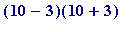

The unsolved fast factorization problem. RSA129 illustration
The problem of being able to perform certain calculations quickly is an enormous topic in Number Theory (a proper discussion of what 'quickly' means involves setting down precise definitions of concepts like, e.g., polynomial time ...) Here I will only remark that while, as you have actually seen:
- modular exponentiation (computing the remainder leaves on division by m )
- the Euclidean algorithm (to compute greatest common divisor) and its extended form
may both be performed 'quickly' (indeed breath-takingly so; the Euclidean algorithm is considered one of the ten greatest algorithms in Mathematics),
BUT
factoring (in
general
)
is currently a totally unknown barrier... There are individual factorization methods, each of which enjoys a
certain limited success
when applied to some numbers, but no single one that works quickly on any given candidate.
Here all that I can expect to do is to give you a flavour of what I mean, and to do so I will use a famous number known as RSA129:
> RSA129 := 114381625757888867669235779976146612010218296721242362562561842935706935245733897830597123563958705058989075147599290026879543541;
> length(RSA129);
>
It first came to public attention in Martin Gardiner's much read column in the August 1997 issue of the
Scientific American
. Rivest, Shamir and Adleman threw this number out as a challenge to be factored. Given the then state of mathematical knowledge (as far as factoring was concerned) and computer power, they estimated that it would take some 20,000 years to factor it, and thereby decrypt a message which used their specially constructed RSA129 as public modulus.
Briefly, a method known as the 'Quadratic Sieve' - introduced in 1981 by the US mathematician Carl Pomerance - together with
thousands
of computers worldwide (organised by the Dutch mathematician Arjen Lenstra) - factored it by April 1994, and decrypted the RSA-encrypted message (which, incidentally, was: "
The magic words are squeamish ossifrage.
")
Lenstra, and his co-workers found the two primes whose product was
RSA129
to be the following 64-digit f1 and 65-digit f2:
> f1 := 3490529510847650949147849619903898133417764638493387843990820577;
> length(f1);
> f2 := 32769132993266709549961988190834461413177642967992942539798288533;
> length(f2);
> f1*f2;

> RSA129;


>
Now, Maple has a command 'ifactor' (which, by default, uses the 1970's Brillhart-Morrison continued fraction method...). Here are some examples of its use:
> ifactor(987654321);
> ifactor(13121110987654321);
> ifactor(41703118764796734960601837);

>
But if I were to foolishly execute the command (which I have neutralized with the initial '#'):
> # ifactor(RSA129);
>
the timer would stay on for MANY, MANY years ... (RSA129 does not fall quickly to the Brillhart-Morrison method).
Question. So, it it just a matter of mere size?
Answer. No; size is only
part
of the problem, and to illustrate that I will create a number
- which I will call by the name 'beyondRSA129' - as follows:
- it will be - like RSA129 itself - the product of two primes 'P' and 'Q'
- I will choose P to be f2 (the greater of the two primes whose product is RSA129)
-
I will choose Q to be
not much
greater than P (in fact I will choose it to be the very next prime after P itself)
Those choices automatically make 'beyondRSA129' be greater than RSA129 (hence the name).
> P := f2;
> Q := nextprime(P);
> beyondRSA129 := P*Q;
> length(beyondRSA129);
>
That 130-digit number can be quickly factored by using an almost trivial method due to Fermat, and the idea behind it is simply this: 91 may be factored by trial-and-error by noting that
- 91 is not a perfect square
- nor is , namely 92
-
nor is
 , namely 95,
, namely 95,
- but , is , giving =  = 7*13
Even this crude procedure that I've written factors the above 130-digit number immediately:
>
Fermat_factor := proc(n, start, finish)
local k, s;
for k from start to finish do
if issqr(n+k^2) then s := sqrt(n+k^2);
lprint(n,`is the product of`, s-k,`and`,s+k);
RETURN() fi od end:
> Fermat_factor(beyondRSA129, 0, 300);
1073816077130400819475486272224340785666856801858501936519539003127821295385023569561686898933064223684576642307425535503474310669, `is the product of`, 32769132993266709549961988190834461413177642967992942539798288533, `and`, 32769132993266709549961988190834461413177642967992942539798288793
>
That entirely success was however due to the arranged fact that the two primes - although both reasonably large - happened to be so relatively close to each other.
Suppose, however, one choose them so that they were quite far apart? That's what I'm now going to do. This time I will make up another number - I will call it 'BEYONDRSA129' - as follows:
- it will be - like beyondRSA129 - the product of two primes 'P1' and 'Q1'
- I will still choose P1 to be P
- I will now choose Q1 to be much greater than P1
> P1 := f2;
> Q1 := nextprime(4470115461512684340891257138125051110076800700282905015819080092370422104067183317016903679999999999999630);
> BEYONDRSA129 := P1*Q1;
> length(BEYONDRSA129);
> BEYONDRSA129 - beyondRSA129;
>
But that much larger number can now be quickly factored by doing this:
>
Pollard:=proc(n)
local a,k;
a[1]:=2:
for k from 2 while igcd(n,a[k-1]-1 mod n)=1
do a[k]:=a[k-1]&^k mod n od;
lprint(n,`is the product of`, igcd(n, a[k-1]-1 mod n), `and`,
n/igcd(n, a[k-1]-1 mod n))
end:
> Pollard(BEYONDRSA129);
146481808053566948606112326494160580676597757390203425433760346556289969224977192583652803722778590707655656624536558761037114144280380743982554672552469432942539798288533, `is the product of`, 4470115461512684340891257138125051110076800700282905015819080092370422104067183317016903680000000000000001, `and`, 32769132993266709549961988190834461413177642967992942539798288533
>
WONDERFUL!!!
(I hope you agree...)
The mathematical ideas behind the success of that factorisation are due to an English mathematician, John Pollard (he lives outside Reading, and has a great interest in the music of Handel), and were published by him in 1974 in the Mathematical Proceedings of the Cambridge Philosophical Society,
in a now famous paper. The method he develops there has become known as Pollard's
 method, and with reason: i
n that paper he expounds a very beautiful idea - which uses Fermat's little theorem - which enables one to factor a number, one of whose prime factors '
p
'
is such
that
the number
method, and with reason: i
n that paper he expounds a very beautiful idea - which uses Fermat's little theorem - which enables one to factor a number, one of whose prime factors '
p
'
is such
that
the number
 has only relatively
small
prime
factors.
That is why I was able so quickly to factor the number BEYONDRSA129. Look at how its prime factor Q1 is structured:
has only relatively
small
prime
factors.
That is why I was able so quickly to factor the number BEYONDRSA129. Look at how its prime factor Q1 is structured:
> ifactor(Q1 - 1);
>
Can you guess what the number Q1 really is, given that I have let you see ?... See, however, the two prime factors - f1 and f2 - of the RSA129 number:
> ifactor(f1 - 1);
> ifactor(f2 - 1);
>
Rivest, Shamir and Adleman really knew what they were doing in choosing their two primes to make up their 129 digit number, RSA129...
A summary.
The current security of the RSA method rests on the
general difficulty of factorisation
... . Besides the Pollard
 method, there is also his
rho-
method (aka his
Monte Carlo
method), and the Pomerance
quadratic sieve
method, and (Dutch mathematician) Hendrik Lenstra's
elliptic curve
method, and the current dominant method: the
Number Field Sieve
method (introduced by Pollard, and added to by many others). The
historic
creation by Agrawal, Kayal, and Saxena (India) in the summer of 2002 of a (long-sought) polynomial time algorithm for primality testing, has raised once again the possibility that someone, at some future date, may create such an algorithm for factoring (and, like A, K, and S) enter the history books...)
method, there is also his
rho-
method (aka his
Monte Carlo
method), and the Pomerance
quadratic sieve
method, and (Dutch mathematician) Hendrik Lenstra's
elliptic curve
method, and the current dominant method: the
Number Field Sieve
method (introduced by Pollard, and added to by many others). The
historic
creation by Agrawal, Kayal, and Saxena (India) in the summer of 2002 of a (long-sought) polynomial time algorithm for primality testing, has raised once again the possibility that someone, at some future date, may create such an algorithm for factoring (and, like A, K, and S) enter the history books...)
A bit of fun:
> AKS1 := to_number(`Agrawal-Kayal-Saxena`);
> ifactor(AKS1);
> AKS2 := to_number(`Agrawal_Kayal_Saxena`);
> ifactor(AKS2);
>